Rainbow Cake
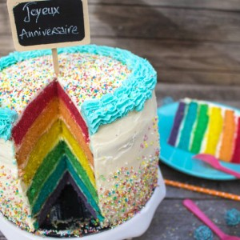
Aujourd’hui on se retrouve avec un recette sucrée particulièrement gourmande qui fait s’émerveiller petits et grands : le Rainbow Cake
19.08.2009… Non ce n’est pas la création de mon blog, ni la date de mon anniversaire (sans blague^^) c’est la date de la création du Rainbow Cake !!! En effet, une Américaine prénommée Kaithlin, passionnée d’écriture, de photographie et de cuisine (mais c’est moi ça, enfin vous l’aurez compris il s’agit d’une blogueuse!!!!!!) a décidé lors d’une soirée organisée pour fêter le départ d’une de ses amie de préparer un gâteau aux couleurs de l’arc en ciel saveur citron.
Quelques jours plus tard après avoir posté la recette de son Rainbow Cake sur son blog les réseaux sociaux s’en emparèrent et ce fut un véritable succès à tel point que Martha Stewart, grande blogueuse culinaire Américaine et possédant sa propre émission de télé fit venir Kaithlin sur son plateau pour qu’elle puisse réaliser en direct son rainbow cake (c’est donc ça le rêve américain^^!!!)
Depuis ce jour c’est devenu « le » gâteau à la mode!! Toute blogueuse (ou blogueur d’ailleurs) pâtissier(e) est obligée de craquer et de tenter l’aventure pour reproduire ce magnifique gâteau de toutes les couleurs! Aux États-Unis ce gâteau est très souvent réaliser pour les anniversaires des petites filles. D’ailleurs, si vous avez des enfants, ils risqueraient de vous en vouloir à mort si vous ne réalisez pas un jour ce gâteau car c’est « sûr » tous ses camarades de classe en auront déjà eu un! (c’est bien connu les parents des autres sont toujours bien mieux).
Les occasions ne manquent vraiment pas pour réaliser un Rainbow Cake et moi j’ai décidé de me lancer à l’occasion d’un anniversaire (pas celui d’une petite fille mais celui d’un « grand » garçon)
Mon Rainbow Cake est constitué de génoises aux amandes et d’un glaçage à la vanille mais libre à vous de le parfumer comme vous le souhaitez…
Maintenant place à la recette!!
Ingrédients
- Sucre semoule - 350g
- Oeufs - 5
- Beurre mou - 220g
- Farine - 420g
- Amande en poudre - 100g
- Levure chimique - 8g
- Lait entier - 350ml
- Amande amère - 1 càc
- Colorants alimentaire - 6
- Philadelphia - 300g
- Mascarpone - 300g
- Crème liquide entière - 20cl
- Sucre glace - 100g
- Extrait de vanille - 1 càc
Instructions
- Dans un grand récipient, faire blanchir les œufs avec le sucre
- Ajouter le beurre mou couper en petits carrés et remuer jusqu’à obtenir un mélange bien homogène
- Mélanger la farine et la levure
- Tamiser le mélange farine-levure au dessus de la préparation
- Bien mélanger pour incorporer toute la farine
- Ajouter l'amande en poudre. Mélanger
- Verser le lait petit à petit tout en continuant à remuer
- Incorporer l'extrait d'amande amère
- Bien mélanger et peser la pâte à l'aide d'un autre récipient (moi j'ai obtenu 1698g)
- Diviser la pâte en 6 et répartissez la dans 6 bols différents (pour moi 283g par bols)
- Ajouter le colorant dans chaque bol (une pointe de couteau suffit) Comme je l'ai dit plus haut il est TRÈS IMPORTANT d'utiliser des colorants en gel qui permettront d'obtenir de très belles couleurs avec une quantité vraiment infime de colorant.
- Au fond d'un moule à manquer de 18cm (c'est quantités sont valables pour un moule de 20-22 cm max) déposer une feuille de papier cuisson et beurrer bien les bords car il ne faut surtout pas que le gâteau s'attache aux parois
- Verser votre première génoise
- Enfourner pour 10 min à 180°
- Renouveler l'opération pour les 5 autres génoises 😀
- Laisser refroidir les gâteaux avant de les glacer
- Dans un récipient assouplir le cream cheese (philadelphia pour moi) et le mascarpone avec l'extrait de vanille. Reserver
- Monter la crème en chantilly
- Ajouter petit à petit le sucre glace
- Incorporer délicatement le mélange cream cheese-mascarpone à la crème
- Continuer de battre à grande vitesse. Il faut obtenir un mélange bien homogène
- Le mélange doit monter à vue d’œil et la crème ne doit pas retomber
- Réserver au frais si vous ne glacer pas votre gâteau immédiatement
- Astuce : pour plus de facilité pour le service, le transport... découper un morceau de carton de 18-20cm de diamètre
- Déposer une noix de glaçage sur le carton pour y faire adhérer la première génoise
- Couvrir le dessus de la première génoise de crème et ajuster la deuxième génoise par dessus
- Continuer ainsi de suite
- Une fois toutes les génoises superposées, recouvrir le gâteau d'une TRÈS fine couche de crème (elle doit être transparente) Cette fine couche va permettre d'éviter par la suite qu'il n'y ait pas de miettes de gâteau qui viennent se mélanger au glaçage et ainsi d'obtenir une surface lisse et bien nette
- Laisser refroidir au frigidaire
- Une fois que le glaçage s'est rigidifié sur le gâteau déposer une nouvelle couche de crème puis laisser de nouveau au frais et ainsi de suite jusqu’à avoir recouvert le gâteau en totalité
- Décorer le gâteau comme bon vous semble
- Conserver au frais avant de déguster 🙂
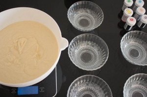
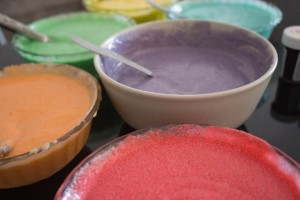
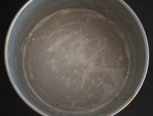
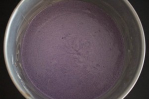
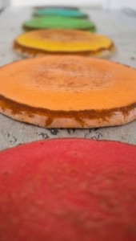
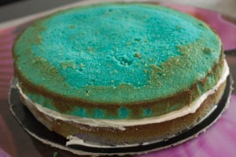
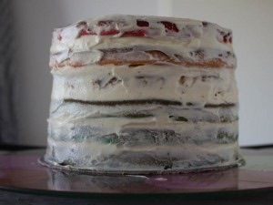
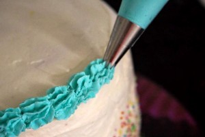
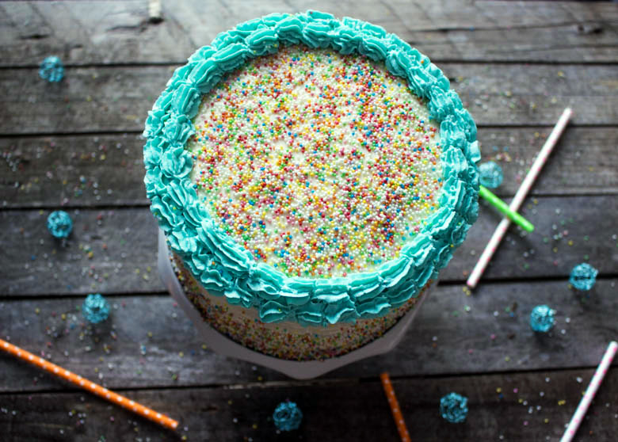
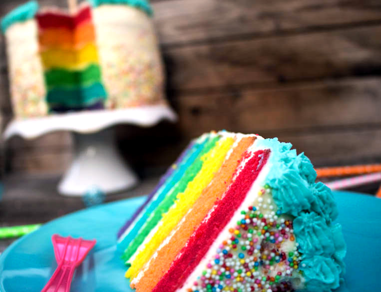
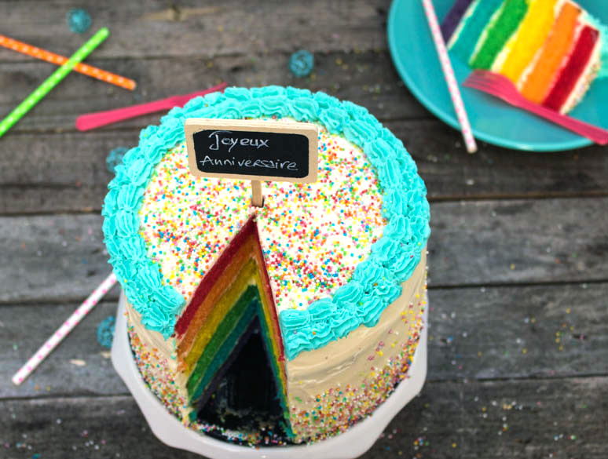
Les tips de la communauté
Gâteau magnifique et impressionnant, très apprécié pour sa présentation visuelle et son goût. Plusieurs testages réussis avec des variations en saveurs (framboise-citron). Recette complète et bien expliquée, demande du temps mais le résultat en vaut la peine.
Astuces
- Utiliser des colorants en gel Wilton plutôt qu'en poudre pour des couleurs plus vives et moins mouillées
- Les génoises se font la veille et se conservent au frais dans du film alimentaire
- Le glaçage se fait idéalement le jour même pour que les couleurs restent éclatantes
- Pour les perles: les jeter poignée par poignée en tournant le gâteau sur plateau tournant, puis les réutiliser
- Sortir le gâteau 30 minutes avant de servir s'il est au frais
Variantes suggérées
- Variante avec arôme framboise-citron au lieu de vanille
- Recouvrement possible en pâte à sucre (ne pas durcir le glaçage au préalable)
- Possible de réaliser en plus de 6 couleurs en divisant les portions
Ajustements signalés
- Ne pas attendre que le glaçage durcisse avant d'appliquer la pâte à sucre
- Importante de bien respecter les proportions de colorant (très peu nécessaire)
- Les colorants liquides ne donnent pas d'aussi beaux résultats que les colorants en gel